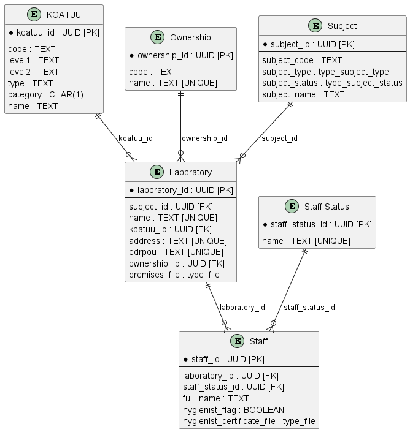

Task 1. Modeling registry database structures
- 1. Task purpose
- 2. Task
- 3. Data model development plan
- 4. Creating tables and relationships
- 5. Creating search conditions for integration with business process forms
- 6. Initial data load
- 7. Applying the developed model to the database
- 8. Useful documentation
| 🌐 This document is available in both English and Ukrainian. Use the language toggle in the top right corner to switch between versions. |
| This training task focuses on scenarios specific to Ukraine. However, it is also valuable for developers working on registry regulations, as it offers a comprehensive guide to using a declarative approach in data-modeling. The task covers essential skills such as creating tables, defining relationships and dependencies, setting up search conditions (views), and managing the initial data load process for registries. |
1. Task purpose
- The goal of this task is to:
-
-
Teach you how to model database structures.
-
Teach you how to develop Liquibase XML templates for deploying database structures in the registry.
-
Teach you how to create Search Conditions in the database for integrating the data factory with business processes.
-
2. Task
Create a database structure to store and process laboratory certification information according to the following logical data model:

|
During this task, all necessary information, examples, and files will be provided. However, you can also clone your project’s repository with the regulation by following the step-by-step guide. The regulation already includes all the
In the data-model folder, you will find the All future database and API representation schemes will be created in the data-model folder, while CSV dictionaries for populating reference tables will be placed in the data-model/data-load folder. |
|
Create a separate file named
Although these changeSets can be included in the main table creation file ( |
More details about all the configurations are provided later in this document.
3. Data model development plan
-
Define primary keys for each entity.
-
Define foreign keys if they exist in the entity.
-
Define required fields.
-
Define fields or combinations of fields that must be unique.
-
Define the names of tables and fields in Latin characters.
4. Creating tables and relationships
-
Open the data-model folder in the registry and create a file called
tablesSubjects.xmlto store changeSets with custom data types. This file will define the following types:-
type_subject_type -
type_subject_status-
Copy the metadata from the XML template below and add it to your
tablesSubjects.xmlfile without modifications.This XML template defines the key parameters for Liquibase to handle custom data types. It specifies the XML schema versions and namespaces for extensions like
dbchangeloganddbchangelog-ext. Thexsi:schemaLocationtells Liquibase where to find schemas for validating database changes.<?xml version="1.0" encoding="UTF-8"?> <databaseChangeLog xmlns="http://www.liquibase.org/xml/ns/dbchangelog" xmlns:xsi="http://www.w3.org/2001/XMLSchema-instance" xmlns:ext="http://www.liquibase.org/xml/ns/dbchangelog-ext" xsi:schemaLocation="http://www.liquibase.org/xml/ns/dbchangelog http://artifactory.control-plane-nexus/nexus/repository/extensions/com/epam/digital/data/platform/dbchangelog/4.5/dbchangelog-4.5.xsd http://www.liquibase.org/xml/ns/dbchangelog-ext http://artifactory.control-plane-nexus/nexus/repository/extensions/com/epam/digital/data/platform/liquibase-ext-schema/latest/liquibase-ext-schema-latest.xsd"> </databaseChangeLog> -
Add a changeSet for the
type_subject_typeinside the<databaseChangeLog>tag:This code block creates a custom data type
type_subject_typeas an enumerated list, used to define the type of subject. The changeSet includes metadata such as the author and a unique ID to track this change. Enum values also include translations for each value, allowing them to be used in localized interfaces.<?xml version="1.0" encoding="UTF-8"?> <databaseChangeLog xmlns="http://www.liquibase.org/xml/ns/dbchangelog" xmlns:xsi="http://www.w3.org/2001/XMLSchema-instance" xmlns:ext="http://www.liquibase.org/xml/ns/dbchangelog-ext" xsi:schemaLocation="http://www.liquibase.org/xml/ns/dbchangelog http://artifactory.control-plane-nexus/nexus/repository/extensions/com/epam/digital/data/platform/dbchangelog/4.5/dbchangelog-4.5.xsd http://www.liquibase.org/xml/ns/dbchangelog-ext http://artifactory.control-plane-nexus/nexus/repository/extensions/com/epam/digital/data/platform/liquibase-ext-schema/latest/liquibase-ext-schema-latest.xsd"> <changeSet author="registry owner" id="enum subject_type"> <comment>CREATE TYPE type_subject_type</comment> <ext:createType name="type_subject_type"> <ext:asEnum> <ext:label translation="Individual">INDIVIDUAL</ext:label> <ext:label translation="Entrepreneur">ENTREPRENEUR</ext:label> <ext:label translation="Legal Entity">LEGAL</ext:label> <ext:label translation="Officer">OFFICER</ext:label> </ext:asEnum> </ext:createType> </changeSet> </databaseChangeLog> -
Add a changeSet for the
type_subject_statusafter thetype_subject_typechangeSet within the same<databaseChangeLog>tag:Here, a second custom data type
type_subject_statusis added. This type is also defined as an enum, but its values describe the statuses of subjects in the system. Placing this changeSet aftertype_subject_typeensures correct execution order, enabling Liquibase to process each custom type properly before creating tables. The final structure should look like this:<?xml version="1.0" encoding="UTF-8"?> <databaseChangeLog xmlns="http://www.liquibase.org/xml/ns/dbchangelog" xmlns:xsi="http://www.w3.org/2001/XMLSchema-instance" xmlns:ext="http://www.liquibase.org/xml/ns/dbchangelog-ext" xsi:schemaLocation="http://www.liquibase.org/xml/ns/dbchangelog http://artifactory.control-plane-nexus/nexus/repository/extensions/com/epam/digital/data/platform/dbchangelog/4.5/dbchangelog-4.5.xsd http://www.liquibase.org/xml/ns/dbchangelog-ext http://artifactory.control-plane-nexus/nexus/repository/extensions/com/epam/digital/data/platform/liquibase-ext-schema/latest/liquibase-ext-schema-latest.xsd"> <changeSet author="registry owner" id="enum subject_type"> <comment>CREATE TYPE type_subject_type</comment> <ext:createType name="type_subject_type"> <ext:asEnum> <ext:label translation="Individual">INDIVIDUAL</ext:label> <ext:label translation="Entrepreneur">ENTREPRENEUR</ext:label> <ext:label translation="Legal Entity">LEGAL</ext:label> <ext:label translation="Officer">OFFICER</ext:label> </ext:asEnum> </ext:createType> </changeSet> <changeSet author="registry owner" id="enum subject_status"> <comment>CREATE TYPE type_subject_status</comment> <ext:createType name="type_subject_status"> <ext:asEnum> <ext:label translation="Canceled">CANCELED</ext:label> <ext:label translation="Registered">REGISTERED</ext:label> <ext:label translation="Suspending">SUSPENDING</ext:label> <ext:label translation="Suspended">SUSPENDED</ext:label> <ext:label translation="Bankruptcy">BANKRUPTCY</ext:label> <ext:label translation="Sanction">SANCTION</ext:label> <ext:label translation="Not Valid">NOTVALID</ext:label> </ext:asEnum> </ext:createType> </changeSet> </databaseChangeLog>
-
-
-
Using the information defined in the data model development plan, and the XML template provided below, create an empty file called
createTables.xml.Use the ready-made file createTables.xmlas an example. -
Copy the metadata from the provided XML template below into your file as-is, without changes.
Example. XML file template<?xml version="1.0" encoding="UTF-8"?> <databaseChangeLog xmlns="http://www.liquibase.org/xml/ns/dbchangelog" xmlns:xsi="http://www.w3.org/2001/XMLSchema-instance" xmlns:ext="http://www.liquibase.org/xml/ns/dbchangelog-ext" xsi:schemaLocation="http://www.liquibase.org/xml/ns/dbchangelog http://www.liquibase.org/xml/ns/dbchangelog/dbchangelog-4.2.xsd http://www.liquibase.org/xml/ns/dbchangelog-ext https://nexus.apps.server-name.dev.registry.eua.gov.ua/nexus/repository/extensions/com/epam/digital/data/platform/liquibase-ext-schema/latest/liquibase-ext-schema-latest.xsd"> </databaseChangeLog>https://<link to central Nexus>/nexus/repository/extensions/com/epam/digital/data/platform/liquibase-ext-schema/latest/liquibase-ext-schema-latest.xsd
-
The
<link to central Nexus>variable refers to the Nexus server path of the central components (it needs to be updated, for example, when migrating the registry to a different cluster).
Every .xml file must contain system information at the top, inside the
<databaseChangeLog>tag.Alternatively, use the template
main-liquibase.xmlfrom the Gerrit repository as an example for copying metadata.The
main-liquibase.xmlfile acts as an "index" and uses the<include>directive to reference other XML templates needed for deploying data structures. -
4.1. Table creation order
Change the order of changeSet entries in the createTables.xml file so that tables with foreign key references to other tables are created after the tables they reference. For example, tables with laboratories should be created after the KOATUU and Ownership tables.
Place the changeSet entries in the following order for table creation:
-
"KOATUU" (COATSU" — Classifier of objects of administrative-territorial structure of Ukraine)
-
"Ownership"
-
"Subject"
-
"Laboratory"
-
"Staff Status"
-
"Staff"
4.2. Creating the "Laboratory" table
In this example, we’ll walk through the process of creating changeSets as part of deploying the physical data model by focusing on the "Laboratory" table.
|
At this stage, you will create a new table called "Laboratory". This process involves the following steps:
- 1.Create a
changeSet -
In this step, create a
changeSet, which is a set of atomic changes in Liquibase.Inside the createTables.xml file, within the
<databaseChangeLog>tag, add a new<changeSet>tag.Table 1. Mandatory attributes Attribute Value idFor example,
"table laboratory"authorYour full name
As a result, your structure should look like this:
<databaseChangeLog> ... ... <changeSet id="table laboratory" author="registry owner"> </changeSet> <changeSet id="table ownership" author="registry owner"> </changeSet> ... </databaseChangeLog> - 2. (Optional) Add a comment
-
Optionally, inside the
<changeSet>tag, add a<comment>tag to explain what changes thischangeSetimplements.The updated structure will look like this:
<databaseChangeLog> ... ... <changeSet id="table laboratory" author="registry owner"> <comment>Creating the "Laboratory" table</comment> </changeSet> </databaseChangeLog> - 3. Add the
createTabletag -
At this step, create an empty table.
Inside the
<changeSet>tag, add a<createTable>tag specifying the table name as "laboratory" in Latin characters.Table 2. Mandatory attributes Attribute Value tableName"laboratory"ext:historyFlag"true"The structure now expands as follows:
<databaseChangeLog> ... ... <changeSet id="table laboratory" author="registry owner"> <comment>Creating the "Laboratory" table</comment> <createTable tableName="laboratory" ext:historyFlag="true"> </createTable> </changeSet> </databaseChangeLog>As part of the regulation verification process, the
historyFlagmust be set totruewhen using the<createTable>or<addColumn>tags in achangeSet. This ensures an additional history table will be generated, with a specific set of system fields for each table.More information about the
ext:historyFlagattribute is available at: - 4. Add the
columntag -
In this step, define the columns of the table.
For each field specified in the data model development plan for the "Laboratory" table, add a
<column>tag inside the<createTable>tag, specifying the column name and data type.Table 3. Attributes Attribute Value nameColumn name
typeData type
(For example,
"UUID","TEXT")The resulting structure expands as follows:
<databaseChangeLog> ... ... <changeSet id="table laboratory" author="registry owner"> <comment>Creating the "Laboratory" table</comment> <createTable tableName="laboratory" ext:historyFlag="true"> <column name="<column_name>" type="<data_type>"> </column> </createTable> </changeSet> </databaseChangeLog>-
For
<column_name>, use Latin characters. -
For
<data_type>, specify the correct data type.
-
- 5. Add the
constraintstag -
At this step, define constraints for each column.
-
For the primary key column, add a nested
<constraints>tag with the following attributes:Table 4. Attributes Attribute Value nullable"false"primaryKey"true"primaryKeyNameFor example,
"pk_laboratory_id"The data type for this column:
UUIDThe primary key name must be unique.
defaultValueComputed"uuid_generate_v4()"This provides a default value for the key.
The
nullable="false"attribute is required for all columns that cannot contain null values according to business logic.Always use
UUIDfor table keys and the functionuuid_generate_v4()for default values. This function generates a random number (see https://www.uuidgenerator.net/version4). -
For all foreign key references, add a
<constraints>tag with theforeignKeyName,referencedTableName, andreferencedColumnNamesattributes, specifying the unique foreign key name, the referenced table, and the referenced column:Table 5. Attributes Attribute Value foreignKeyName"fk_<Unique foreign key name>"referencedTableName"<Referenced table name>"referencedColumnNames"<Referenced column name>"Prefix the foreignKeyNameattribute withfk_to indicate the relationship to a foreign table.When adding foreign keys, be mindful of the table creation order.
-
- 6. The final structure should look like this:
-
Example.
changeSetwith tags for creating thelaboratorytable<databaseChangeLog> ... ... <changeSet id="table laboratory" author="registry owner"> <comment>Creating the "Laboratory" table</comment> <createTable tableName="laboratory" ext:historyFlag="true"> <column name="laboratory_id" type="UUID" defaultValueComputed="uuid_generate_v4()"> <constraints nullable="false" primaryKey="true" primaryKeyName="pk_laboratory_id"/> </column> <column name="subject_id" type="UUID" remarks="Subject identifier"> <constraints nullable="false" foreignKeyName="fk_laboratory_subject" referencedTableName="subject" referencedColumnNames="subject_id"/> </column> <column name="name" type="TEXT"> <constraints nullable="false" unique="true"/> </column> <column name="koatuu_id" type="UUID"> <constraints nullable="false" foreignKeyName="fk_laboratory_koatuu" referencedTableName="koatuu" referencedColumnNames="koatuu_id"/> </column> <column name="address" type="TEXT"> <constraints nullable="false" unique="true"/> </column> <column name="edrpou" type="TEXT"> <constraints nullable="false" unique="true"/> </column> <column name="ownership_id" type="UUID"> <constraints nullable="false" foreignKeyName="fk_laboratory_ownership" referencedTableName="ownership" referencedColumnNames="ownership_id"/> </column> <column name="premises_file" type="type_file" remarks="Premises documentation"/> </createTable> </changeSet> </databaseChangeLog>For fields that must contain only unique values, add the
<constraints>tag with theunique="true"attribute and an optionaluniqueConstraintNameattribute:Example. Creating a table with auniqueconstraint<changeSet id="table ownership" author="registry owner"> <createTable tableName="ownership" ext:historyFlag="true" remarks="Ownership types directory"> <column name="ownership_id" type="UUID" defaultValueComputed="uuid_generate_v4()"> <constraints nullable="false" primaryKey="true" primaryKeyName="pk_ownership_id"/> </column> <column name="code" type="TEXT" remarks="Code"> <constraints nullable="false"/> </column> <column name="name" type="TEXT" remarks="Name"> <constraints nullable="false" unique="true"/> </column> </createTable> </changeSet>If multiple fields must form a unique value, add an
<addUniqueConstraint>tag after the<createTable>tag, specifying thetableNameand the combination ofcolumnNamesthat must be unique.Example. Creating a table with an<addUniqueConstraint>tag<createTable> ... ... </createTable> <addUniqueConstraint tableName="laboratory" columnNames="name,edrpou"/>
|
The principle for creating other tables is similar to the example provided for the "Laboratory" table. The structure of parameters in the created tables is consistent across all tables in this task. |
When modeling table or field names consisting of two or more words, use the "_" character between the words.
Table and field names should contain only Latin alphabet letters.
For example: staff_status.
|
|
There are restrictions on using certain identifiers or names for tables and fields. Some words are keywords in SQL and PostgreSQL standards and are not allowed for use. Before assigning names to tables, refer to the list of SQL keywords here: https://www.postgresql.org/docs/current/sql-keywords-appendix.html. Example: a table named |
4.3. Creating the "Subject" table
4.3.1. Purpose of the registry.subject table
The registry.subject table is part of the physical data model for the Certified Laboratories Registry. Its structure is specific to this registry and is defined by the regulatory requirements. This table’s structure is not standardized across all registries—each project has its own tables tailored to its needs.
The registry.subject table stores data about subjects linked to registry objects, such as laboratories. It establishes the relationship between objects with the attribute ext:isObject="true" and the subjects to which those objects belong. If this table is not created or its name is incorrectly specified, errors will occur when foreign keys pointing to subject_id are created.
The registry.subject table is used here as an example for learning purposes. Data structures and regulations may vary for each registry.
|
4.3.2. Structure and table creation
Below is an example of the XML code for creating the registry.subject table:
<changeSet author="registry owner" id="table subject">
<createTable tableName="subject" ext:historyFlag="true">
<column name="subject_id" type="UUID">
<constraints nullable="false" primaryKey="true" primaryKeyName="pk_subject"/>
</column>
<column name="subject_code" type="TEXT">
<constraints nullable="false"/>
</column>
<column name="subject_type" type="type_subject_type"/>
<column name="subject_status" type="type_subject_status"/>
<column name="subject_name" type="TEXT"/>
</createTable>
</changeSet>4.3.3. Table creation order
To avoid errors, the registry.subject table must be created before any other tables that use the subject_id field as a foreign key. For example, the laboratory table should only be created after the registry.subject table is successfully created. If this order is violated, an error will occur:
ERROR: relation "registry.subject" does not exist
Ensure the registry.subject table is created, i.e., add the corresponding changeSet, BEFORE creating the laboratory table.
|
4.3.4. Usage of ext:isObject and ext:classify attributes
4.3.4.1. Using the attribute ext:isObject="true"
If a table contains the ext:isObject="true" attribute, it will receive a subject_id field, which acts as a foreign key to the registry.subject table. This field will have the nullable="false" constraint, meaning it is required.
<createTable tableName="laboratory" ext:isObject="true">
<column name="laboratory_id" type="UUID">
<constraints nullable="false" primaryKey="true" primaryKeyName="pk_laboratory_id"/>
</column>
<column name="subject_id" type="UUID">
<constraints nullable="false"
foreignKeyName="fk_laboratory_subject"
referencedTableName="subject"
referencedColumnNames="subject_id"/>
</column>
</createTable>The ext:isObject="true" attribute ensures that the object in the table (for example,
a laboratory) is linked to a subject through the subject_id foreign key.
If the registry.subject table is not part of the regulation, avoid using this attribute to prevent deployment errors.
4.3.4.2. Using the ext:classify tag
The ext:classify tag also automatically adds the isObject="true" attribute
and creates a subject_id field referencing the registry.subject table.
For example:
<createTable tableName="sample" ext:classify="private">
<column name="sample_id" type="UUID">
<constraints nullable="false" primaryKey="true" primaryKeyName="pk_sample_id"/>
</column>
</createTable>This code adds the subject_id field and sets up a foreign key to the registry.subject table. If the registry.subject table is not created, an error will occur.
4.3.5. Field definitions
-
subject_id— A unique identifier for the subject, in UUID format. -
subject_code— The subject’s code. -
subject_type— The type of subject, determined by a reference table. -
subject_status— The subject’s status (e.g., active or inactive). -
subject_name— The name of the subject.
4.3.6. Conclusions
-
The
registry.subjecttable is crucial for establishing links between objects and subjects. -
Using the
ext:isObjectandext:classifyattributes requires the presence of theregistry.subjecttable. If this table is not needed, avoid using these attributes. -
The order in which tables are created is critical to prevent errors, especially when dealing with foreign keys.
-
The structure of the
registry.subjecttable in this example may differ in other registries depending on their specific requirements and regulations.
4.4. Creating the "KOATUU" table
Following the example from Creating the "Laboratory" Table, create a table called "KOATUU" (the columns are available in createTables.xml):
-
At the end of the
<databaseChangeLog>tag in thecreateTables.xmlfile, add a new<changeSet>tag defining the set of changes. -
Inside the
<changeSet>tag, add a<createTable>tag with the name "KOATUU" (e.g.,"koatuu"). -
Add
<column>tags for each column in the "KOATUU" table as defined in the Data model development plan. -
Inside the
<constraints>tag, define the table’s primary key and all required fields.
4.5. Creating the "Ownership" table
Following the example from Creating the "Laboratory" Table, create a table called "Ownership":
-
At the end of the
<databaseChangeLog>tag in thecreateTables.xmlfile, add a new<changeSet>tag defining the set of changes. -
Inside the
<changeSet>tag, add a<createTable>tag with the name "Ownership" (e.g.,"ownership"). -
Add
<column>tags for each column in the "Ownership" table as defined in the Data model development plan. -
Inside the
<constraints>tag, define the table’s primary key and all required fields.
4.6. Creating the "Staff Status" table
Following the example from Creating the "Laboratory" Table, create a table called "Staff Status":
-
At the end of the
<databaseChangeLog>tag in thecreateTables.xmlfile, add a new<changeSet>tag defining the set of changes. -
Inside the
<changeSet>tag, add a<createTable>tag with the name "Staff Status" (e.g.,"staff_status"). -
Add
<column>tags for each column in the "Staff Status" table as defined in the Data model development plan. -
Inside the
<constraints>tag, define the table’s primary key and all required fields.
4.7. Creating the "Staff" table
Following the example from Creating the "Laboratory" Table, create a table called "Staff":
-
At the end of the
<databaseChangeLog>tag in thecreateTables.xmlfile, add a new<changeSet>tag defining the set of changes. -
Inside the
<changeSet>tag, add a<createTable>tag with the name "Staff" (e.g.,"staff"). -
Add
<column>tags for each column in the "Staff" table as defined in the Data model development plan. -
Inside the
<constraints>tag, define the table’s primary key, all foreign keys, and all required fields.
4.8. Table deletion order
To delete a table, you cannot just remove the changeSet that created it.
Deletion is handled by adding a new changeSet to delete a specific table and its history table (the history table has the same name as the original but with the _hst suffix.
Example: The table table-name will have a history table called table-name_hst.
<changeSet id="drop-table" author="author-name">
<dropTable tableName="table-name"/>
</changeSet><changeSet id="drop-table-hst" author="author-name">
<dropTable tableName="table-name_hst"/>
</changeSet>Only after deleting the table and its history table can a new table with modified fields be created.
|
When deleting a table, make sure to account for all objects that depend on this table: The process of deleting a history table, analyticsViews, and searchConditions is similar to deleting tables. You can delete all dependent tables in one Learn more about custom XML tags on the following pages: |
|
Incorrect sequencing of changes to the data model regulations can result in errors during the data model build. One possible error is: If necessary, during regulation development, you can run the Cleanup and reload corrected Never perform cleanup in the |
5. Creating search conditions for integration with business process forms
Search Conditions are special objects used by forms and business processes to retrieve data sets from one or more registry tables.
At the database level, they are implemented through views, which are defined using SQL queries that access one or more tables.
To create search conditions, use the <ext:createSearchCondition> tag, developed as part of the Liquibase-based physical data modeling tool extension on the Registry Platform, as well as specific search condition attributes.
|
When naming search conditions consisting of two or more words, use an underscore ( Search condition names should only contain Latin alphabet letters. For example: Developers can choose their preferred naming convention for search conditions. To better identify them, consider using different naming conventions for tables and search conditions. For search conditions, you can add a prefix or suffix, such as Example of possible names:
|
|
Follow best practices for data modeling in the registry: |
<changeSet author="registry owner" id="SearchCondition">
<ext:createSearchCondition name="SearchCondition" limit="1">
<ext:table name="table_one" alias="to">
<ext:column name="name" alias="to_name"/>
<ext:column name="type" searchType="equal"/>
<ext:function name="count" alias="cnt" columnName="uuid"/>
</ext:table>
<ext:table name="table_two" alias="tt">
<ext:column name="name" alias="tt_name"/>
<ext:column name="code" searchType="contains"/>
<ext:function name="sum" alias="sm" columnName="code"/>
</ext:table>
<ext:join type="left">
<ext:left alias="to">
<ext:column name="name"/>
</ext:left>
<ext:right alias="tt">
<ext:column name="name"/>
</ext:right>
</ext:join>
<ext:where>
<ext:condition tableAlias="to" columnName="type" operator="eq" value="'char'">
<ext:condition logicOperator="or" tableAlias="to" columnName="type" operator="eq" value="'text'"/>
</ext:condition>
<ext:condition logicOperator="and" tableAlias="tt" columnName="code" operator="similar" value="'{80}'"/>
</ext:where>
</ext:createSearchCondition>
</changeSet>-
Create a separate file for search conditions, createSearchConditions.xml, using the same template as createTables.xml.
Use the provided file createSearchConditions.xml as an example. -
Following the same approach as with tables, create the following search conditions in separate changeSets.
5.1. Search region in the "KOATUU" table
-
Used by the business process: Add Laboratory.
-
Search condition name:
koatuu_obl_contains_name. -
Search field:
name, search type:contains. -
Sorting by field:
name, direction:asc.
<changeSet author="registry owner" id="searchCondition koatuu_obl_contains_name">
<ext:createSearchCondition name="koatuu_obl_contains_name">
<ext:table name="koatuu" alias="k">
<ext:column name="koatuu_id"/>
<ext:column name="code"/>
<ext:column name="name" sorting="asc" searchType="contains"/>
</ext:table>
<ext:where>
<ext:condition tableAlias="k" columnName="type" operator="eq" value="'О'"/>
</ext:where>
</ext:createSearchCondition>
</changeSet>SELECT k.koatuu_id,
k.code,
k.name
FROM koatuu k
WHERE k.type = 'О'::text
ORDER BY k.name;5.2. Search locality by name and region code in the "KOATUU" table
-
Used by the business process: Add Laboratory.
-
Search condition name:
koatuu-np-starts-with-name-by-obl. -
Search field:
name, search type:startWith. -
Search field:
level1, search type:equal. -
Sorting by field:
name, direction:asc.
<changeSet author="registry owner" id="searchCondition koatuu_np_starts_with_name_by_obl">
<ext:createSearchCondition name="koatuu_np_starts_with_name_by_obl" limit="100">
<ext:table name="koatuu" alias="np">
<ext:column name="koatuu_id"/>
<ext:column name="name" searchType="startsWith" sorting="asc"/>
<ext:column name="level1" searchType="equal"/>
</ext:table>
<ext:table name="koatuu" alias="rn">
<ext:column name="name" alias="name_rn"/>
</ext:table>
<ext:join type="left">
<ext:left alias="np">
<ext:column name="level2"/>
</ext:left>
<ext:right alias="rn">
<ext:column name="code"/>
</ext:right>
<ext:condition logicOperator="and" tableAlias="rn" columnName="type" operator="eq" value="'Р'"/>
</ext:join>
<ext:where>
<ext:condition tableAlias="np" columnName="type" operator="eq" value="'НП'"/>
</ext:where>
</ext:createSearchCondition>
</changeSet>SELECT np.koatuu_id,
np.name,
np.level1,
rn.name AS name_rn
FROM koatuu np
LEFT JOIN koatuu rn ON np.level2 = rn.code AND rn.type = 'Р'::text
WHERE np.type = 'НП'::text
ORDER BY np.name;5.3. Search ownership type by name in the "Ownership" table
-
Used by the business process: Add Laboratory.
-
Search condition name:
ownership-contains-name. -
Search field:
name, search type:contains. -
Sorting by field:
name, direction:asc.
<changeSet author="registry owner" id="searchCondition ownership_contains_name">
<ext:createSearchCondition name="ownership_contains_name">
<ext:table name="ownership" alias="o">
<ext:column name="ownership_id"/>
<ext:column name="code"/>
<ext:column name="name" sorting="asc" searchType="contains"/>
</ext:table>
</ext:createSearchCondition>
</changeSet>SELECT o.ownership_id,
o.code,
o.name
FROM ownership o
ORDER BY o.name;5.4. Search laboratories by name or EDRPOU code in the "Laboratory" table
5.4.1. Example of search condition #1
-
Used by the business process: Adding a Laboratory.
-
Search condition name:
laboratory-equal-edrpou-name-count. -
Search field:
edrpou, search type:equal. -
Search field:
name, search type:equal.
<changeSet author="registry owner" id="searchCondition laboratory_equal_edrpou_name_count">
<comment>CREATE search condition laboratory_equal_edrpou_name_count</comment>
<ext:createSearchCondition name="laboratory_equal_edrpou_name_count">
<ext:table name="laboratory">
<ext:function name="count" alias="cnt" columnName="laboratory_id"/>
<ext:column name="edrpou" searchType="equal"/>
<ext:column name="name" searchType="equal"/>
</ext:table>
</ext:createSearchCondition>
</changeSet>SELECT laboratory.edrpou,
laboratory.name,
count(laboratory.laboratory_id) AS cnt
FROM laboratory
GROUP BY laboratory.edrpou,
laboratory.name;5.4.2. Example of search condition #2
-
Used by the business process: Adding Personnel to the Staff.
-
Search condition name:
laboratory-start-with-edrpou-contains-name. -
Search field:
edrpou, search type:startsWith. -
Search field:
name, search type:contains.
<changeSet author="registry owner" id="searchCondition laboratory_start_with_edrpou_contains_name">
<comment>CREATE search condition laboratory_start_with_edrpou_contains_name</comment>
<ext:createSearchCondition name="laboratory_start_with_edrpou_contains_name">
<ext:table name="laboratory">
<ext:column name="laboratory_id"/>
<ext:column name="edrpou" searchType="startsWith"/>
<ext:column name="name" searchType="contains"/>
</ext:table>
</ext:createSearchCondition>
</changeSet>SELECT laboratory.laboratory_id,
laboratory.edrpou,
laboratory.name
FROM laboratorySELECT laboratory.laboratory_id,
laboratory.edrpou,
laboratory.name
FROM laboratory
WHERE laboratory.name LIKE '%name%' AND laboratory.edrpou LIKE 'edrpou%'
Input parameters: name, edrpou5.5. Search staff by name in the "Staff Status" table
-
Used by the business process: Adding Personnel.
-
Search condition name:
staff-status-contains-name. -
Search field:
name, search type:contains. -
Sorting by field:
name, direction:asc.
<changeSet author="registry owner" id="searchCondition staff_status_contains_name">
<comment>CREATE search condition staff_status_contains_name</comment>
<ext:createSearchCondition name="staff_status_contains_name">
<ext:table name="staff_status" alias="s">
<ext:column name="staff_status_id"/>
<ext:column name="name" sorting="asc" searchType="contains"/>
</ext:table>
</ext:createSearchCondition>
</changeSet>SELECT s.staff_status_id,
s.name
FROM staff_status s
ORDER BY s.name;6. Initial data load
To ensure proper population and operation of the registry, reference tables must be pre-populated with data. This data load should be performed before the registry goes live via a special database function call. The function can be invoked using the appropriate Liquibase tag – <sql>.
Example XML template with a change set for the initial data load
<property name="dataLoadPath" value="/tmp/data-load/"/>
<changeSet author="registry owner" id="load data to dictionaries">
<sql dbms="postgresql" endDelimiter=";" splitStatements="true" stripComments="true">
CALL p_load_table_from_csv('staff_status','${dataLoadPath}dict_status_spivrobitnyka.csv', array['code','name','constant_code'], array['name','constant_code']);
CALL p_load_table_from_csv('ownership','${dataLoadPath}dict_formy_vlasnosti.csv', array['code','name']);
<!--
The following function example is only relevant within the framework of the Certified Laboratories Registry for the initial loading of the KOATUU directory.
It is not expected to use the KOATUU directory further when deploying the data model.
Example:
CALL p_load_table_from_csv(
'koatuu'
,'${dataLoadPath}dict_koatuu.csv'
, array['code','category','name']
, array['code','category','name'
,'level1::substring(code,1,2)||''00000000'''
,'level2::substring(code,1,5)||''00000'''
,'type::CASE WHEN code ~ ''[0-9]{2}0{8}'' AND code !~ ''(80|85)0{8}'' THEN ''О''
WHEN code ~ ''[0-9]{2}2[0-9]{2}0{5}'' AND code !~ ''[0-9]{2}20{7}'' THEN ''Р''
WHEN coalesce(category, ''Р'') != ''Р''
OR code IN (SELECT DISTINCT substring(code,1,5)||''00000'' FROM koatuu_csv k2 WHERE category = ''Р'') AND category IS NULL
OR code ~ ''(80|85)0{8}'' THEN ''НП''
ELSE NULL END']
);
-->
</sql>
</changeSet>
The CALL p_load_table_from_csv() function is used ONLY within the Certified Laboratories Registry for the initial KOATUU directory load. Further use of the KOATUU directory is not anticipated when deploying the data model.
|
- Follow these steps to perform the initial data load:
-
-
Create a populateDictionaries.xml file using the same template as createTables.xml.
Use the provided file populateDictionaries.xmlas an example. -
Add a separate
<changeSet>tag with the set of changes. -
Inside the
<changeSet>tag, add the<sql>tag with the attributedbms="postgresql". -
Inside the
<sql>tag, add function calls top_load_table_from_csv()for each reference table.Example 1. Function input parametersCALL p_load_table_from_csv('research','${dataLoadPath}dict_typy_doslidzhen.csv', array['code','research_type'], array['research_type']);where:
-
'staff_status'='p_table_name'— the name of the database table to which the data will be loaded; -
${dataLoadPath}dict_typy_doslidzhen.csv='p_file_name'— the full path to the data file. -
array['code','name','constant_code']=p_table_columns— an array listing the CSV file fields; -
array['name','constant_code']=p_target_table_columns— an array listing the target table fields for loading the data.
Field names specified in the
p_table_columnsparameter may not match the names in the file — they may be used in the next parameter,p_target_table_columns, for data transformation.Field names in the
p_target_table_columnsparameter must correspond to the list inp_table_columns(if the table fields fully match the file fields, this parameter can be omitted). -
-
|
After making changes to the data model in the Gerrit repository, all files from the data-model/data-load folder are copied to the /tmp/data-load folder on the database server. Therefore, the file path should look as follows: /tmp/data-load/<file_name>.csv, where:
|
As a result, we get 3 function calls that load data into reference tables from the following files:
| Reference Table | Data File |
|---|---|
KOATUU (optional) |
|
Ownership Type |
|
Staff Status |
7. Applying the developed model to the database
The platform uses the main-liquibase.xml file as the primary one for deploying the registry’s data model.
| All change sets included in the main-liquibase.xml file will be applied to the database. |
To include a change set from the files created in the previous steps, use the <include> tag with the file attribute, which specifies the path to the XML file. The working directory for Liquibase is the root folder of the Gerrit repository, so the file path should look like this: data-model/*.xml.
- To apply the developed model, follow these steps:
-
-
Create a main-liquibase.xml file using the same template as createTables.xml.
Use the provided template main-liquibase.xmlfrom the Gerrit repository as an example. -
Add the
<include>tag for each file created in the previous stages, specifying the file path in thefileattribute.Example of inserting a file in an XML template<include file="data-model/createTables.xml"/>Be sure to add a context for the initial data load.
To correctly deploy your registry’s data model, you must specify the
context="pub"attribute within the<include>tag. For example, if you want to include a file that contains procedures for populating reference tables with initial data — populateDictionaries.xml — in the data model deployment.Example 2. Adding thecontext="pub"context for populating tables with data<include file="data-model/populateDictionaries.xml" context="pub"/>The schema includes the <include> element, which references the external file "populateDictionaries.xml". The "pub" context indicates that the elements in this file will be used in the registry’s operational database.
-
Place the XML files in the data-model folder of the Gerrit repository.
-
Copy the data files to the data-model/data-load folder.
You should have 8 files in total for deploying the data model and initially populating the database:
- 5 files with XML templates:
-
-
tablesSubjects.xml
- 3 CSV files with reference data for an initial load:
-
Apply changes to Gerrit following the instructions in Submitting changes to the remote repository in Gerrit.
-
Go through the code review process for your commit (Code Review). If you do not have the necessary permissions, contact the responsible person.
-
Wait for the Jenkins pipeline MASTER-Build-registry-regulations to complete.
-